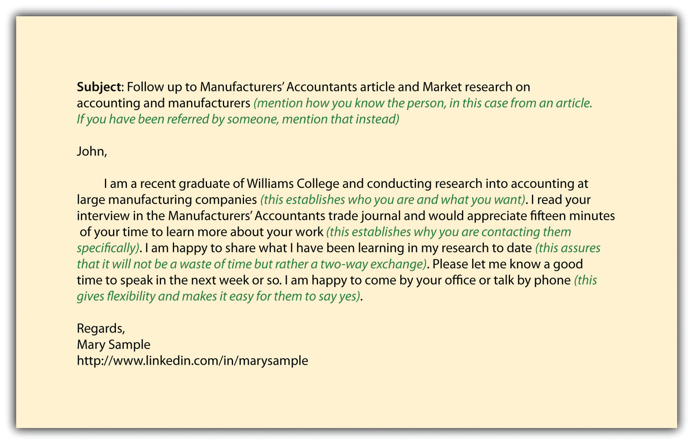

Most job seekers see informational interviews as a shortcut to research. Why not find someone who does the job, works at the organization, or works in the industry so they can give you a summary of the job, organization, or industry, instead of plowing through secondary data yourself? There are several reasons it is a bad idea to jump right to informational interviews without conducting your own research first:
The best informational interviews are two-way exchanges of information, more like a conversation than an interrogation. You are offering the information you have collected via your research and the interviewee is adding his or her thoughts and ideas. You come across not as the novice looking for a favor and more as a colleague brainstorming ideas. People are busy and don’t always take the time to read business news, attend trade association meetings, or do the in-depth research you will be doing. They will appreciate you bringing to them the latest news. By being well researched and prepared, you do not have to feel like you are imposing on someone when asking for an informational interview. You will be giving back as well, in terms of information on breaking news, trends, or innovations.
You want to get to know your interviewee by asking questions such as the following:
Interest in their specific background establishes rapport because it shows you care about them specifically. It also gives you a foundation for questions to ask later because you know more about their experience.
You want to get broader information about the industry, so you ask questions that reflect your research:
This is why research prior to the informational interview is so critical. You use your research findings as a springboard for conversation. You are not relying on the interviewee to think of everything and be the sole source of information. You are offering ideas, too. Informational interviews also enable you to dive deeper into what you previously researched.
Pick several research findings to test, and choose what to ask based on what level and type of experience your interviewee has. If your interviewee is very experienced and senior, you can ask broad strategy questions. If your interviewee is focused on a very specific area, say technology, focus on technology-related issues in the discussion.
You want to get career-related information, such as salary and environment, and a candid sense of your chances in this job, organization, or industry:
These questions enable you to get information on the touchy issues of compensation and lifestyle, as well as candid feedback on your hiring prospects. By offering ideas, you take the pressure off the interviewee to reveal sensitive information. Instead, you give them something to react to. People will also appreciate that you have done some salary research, as they might not have time to see what is happening in the market, and they will want to reciprocate by sharing something they know.
Asking about the competitiveness of your skills and experience is not the same as asking for a specific job. You should never ask for a job in an informational interview. It is disingenuous because you asked for a meeting to focus on gathering information, not to ask for a job.
In the previous example, you are asking for candid feedback about your job potential. You will not get candid feedback from recruiters or prospective employers during an actual job interview. Recruiters and prospective employers will be concerned about being too critical too soon, angering the candidate, and having the candidate bad-mouth the organization or even sue. Since you will not get explicit feedback during the interview process, try to get that feedback in an informational interview. Asking if your informational interviewee would consider hiring or referring you is much more direct than just asking if your background is good. The measure that matters is whether you are competitive for an open job. Asking for job potential is still, however, not as presumptuous as asking for a job outright.
For people from a specific organization, you want to fill in your organizational chart with answers to the following questions:
If you are trying to fill out spaces in your organizational chart, you should ask these questions if your interviewee would likely know the answers. If your interviewee is very junior or works in a department with little other contact, he or she may not know, so don’t take it personally if they don’t share any information. You should also ask about other organizations because sometimes insiders do know their competitors. You also might get referrals to additional potential informational interviews.
Sample informational interview questions include the following:
If you look at the structure of the preceding informational interview, many questions use the secondary research as a springboard for the question. You want to give information so it is less presumptuous to ask for information in return. You want to establish your knowledge so the interviewee sees you as an insider and is more open to sharing. You want to save the interviewee from having to do all the work of thinking of what to talk about. You want to confirm and refine your research to date. In this way, you are not just asking a series of questions, but you are testing hypotheses that you have formed from your secondary research and other informational interviews.
When you invite your interviewee to an informational interview, make sure they know that you have done some interesting research and would like to share and confirm the results with them. Many job seekers do not do this research, so you differentiate yourself immediately and assure the interviewee that it is worth their time to see you. You are more likely to land informational interviews if the interviewee knows that you have done some work in advance and have interesting insights and questions to share.
Common rules of etiquette apply in the protocols of informational interviews. When asking for the interview, you can approach your interviewee by phone, mail, or e-mail. There is no one right answer, but each has advantages and disadvantages:
Table 6.3 Possible Ways to Ask for an Informational Interview and Advantages and Disadvantages of Each
| Approach by | Advantages | Disadvantages |
|---|---|---|
| Phone |
|
|
|
|
|
|
|
E-mail has the most advantages and fewest disadvantages and should work for most job seekers. If you are more confident in your phone approach or mail campaign, then you may want to try that as well. You might also tailor your approach to the recipient. If you get referred to someone and they tell you to call them, then call them, even if you’d prefer to e-mail. You want to approach based on what is best for the interviewee.
The content of your approach, whether by phone, mail, or e-mail, should include who you are and why you are making contact. If someone refers you, mention that right away. Regarding who you are, make your introduction compelling but brief. Do not attach your résumé; this is not a job interview, so that is presumptuous. An elegant way to share your résumé is to put your online profile hyperlink in your e-mail signature. This way, the interviewee can easily get more information about you without having to search, but it is shared in one line rather than a paragraph or more of detail. This is a key advantage of an e-mail approach.
Figure 6.5 Sample Informational Interview Approach E-mail
Common etiquette applies during and after the informational interview as well. Be on time, and do not take too much time. Ask for fifteen minutes, be mindful of the time, and offer to end the interview right at fifteen minutes. Only stay longer if invited. Send a thank-you note—e-mail is fastest, handwritten by mail is a classy addition, but definitely send at least an e-mail so you know it arrives promptly.
Informational interviews lead to additional meetings. If you have a good interview, don’t forget to ask the interviewee for referrals to other interviews: Based on my research, I am planning to talk to [name specific people or at least companies]. Is there anyone else who should be on my research list? Can I use your name when I contact them?
Ask for names directly. Your well-researched interview should have assured the interviewee that you will not waste other people’s time, so they will be more confident about sharing names. Always try to get the contact information so you make the contact directly, rather than asking the interviewee to do an introduction. Otherwise, the interviewee, while well intended, may forget or just get too busy. Also confirm if you can use their name when you approach the new contact, as they will be more receptive to someone who has been referred.
If the interviewee insists on contacting people first before referring them, try to get specific agreement on when you can follow up. A good approach is to say, “Thank you for offering to speak to [person the interviewee referred] on behalf of my research. Can I check in with you [pick a specific date within a week or ten days] to follow up?” This confirms your understanding of what they promised to do, gives them a deadline, and gives you a reason to check back in with them in seven to ten days.
Remember to use information you gain from earlier informational interviews in future interviews. It is not just the secondary research you should allude to. In fact, it can help you land additional interviews if you mention to future interviewees that you have already spoken with their competitors and are happy to share what you have learned. You will not share anything sensitive or confidential or reveal specific names of your sources. But you can talk about what you have learned in general and the types of people you have interviewed—for example, “I have been speaking with people in accounting at leading manufacturers, and they are concerned about the recent changes to accounting regulations.”